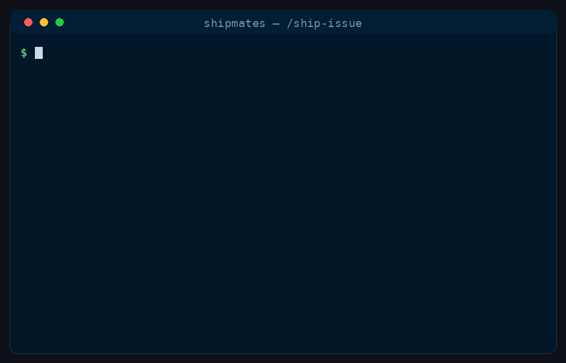
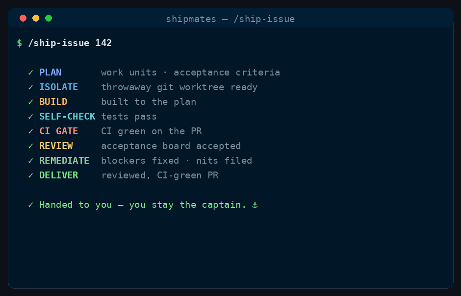

Shipmates
Custom subagents & command workflows — on Claude Code today.
Stop being your AI's for-loop. Give it a crew.
One command takes a GitHub issue from open to a reviewed, CI-green pull request — autonomously.
- MIT licensed
- 12 specialists
- Zero config


/ship-issue runs, in order.Come aboard
Get the crew aboard
One line, no clone. Bring the crew aboard for every project, or scope it to a single repo.
Every project (global)
curl -fsSL https://raw.githubusercontent.com/saman-mb/shipmates/main/install.sh | bashOne repo (project-scoped)
curl -fsSL https://raw.githubusercontent.com/saman-mb/shipmates/main/install.sh | bash -s -- --project /path/to/your/repoPrefer to read the script first? Clone the repo and run ./install.sh — same flags. It backs up any file it would overwrite, and --uninstall removes what it installed.
Meet the crew
Twelve Claude Code subagents
Domain-neutral specialists that work on anything — a game engine, a web app, a CLI. The bar they hold you to comes from your repo's README and CLAUDE.md, not the role.
-
architectStructure & schema — coupling, boundaries, migration safety.
-
senior-engineerBuilds to spec, fixes red CI, clears review defects.
-
sdetRuns the real tests/build and reports pass/fail with a defect list.
-
security-engineerThreat-models the change — authz, injection, secrets, vulnerable deps.
-
site-reliability-engineerReliability, failure modes, rollback safety — and bug root-cause.
-
performance-engineerProfiles, benchmarks, and proves the win.
-
devops-engineerBuild & delivery — reproducibility, pinning, environment parity.
-
product-managerAccepts or rejects against the acceptance criteria and your bar.
-
ux-ui-designerSpecs & reviews on-screen UI — tokens, layout, focus, a11y.
-
art-directorDirects & reviews rendered visuals — judges the picture.
-
technical-writerWrites docs from the real code; proves them with a reader test.
-
data-scientistData/model work — metrics, leakage, validation, reproducibility.
The commands
Command workflows
Reusable command workflows — each one convenes the right crew for a job and drives it to done. Open any command for its full stage-by-stage breakdown.
-
Flagship
/ship-issueDrives issue #n from open → reviewed, CI-green PR with the whole crew.
-
/fix-bugReproduce as a failing test first, root-cause, minimal fix, red→green proof.
-
/plan-epicsTurns a brief into GitHub epics + linked, labelled user stories, in parallel.
-
/hardenThreat-models a surface and remediates until every finding is fixed or accepted.
-
/spikeDe-risks a decision — prototypes options in parallel, judges them, records an ADR.
-
/migrateSweeps a migration across every call site, verified, no remnants left.
-
/documentWrites docs from the real code, gated on a fresh reader completing the steps.
-
/releaseCuts a release — changelog, CI-green tag, SRE rollback pre-flight, opt-in publish.
-
/polishIterates a visual/UI artifact to a specialist's sign-off — render → critique → fix.
-
/reviewRuns the board against a PR the crew didn't author — reports, never repairs.
-
/onboardReads an unfamiliar repo and writes the agent-facing context file the crew needs.
-
/refactorReshapes code without changing behaviour — characterization tests pinned first.
How the voyage works
How /ship-issue takes a GitHub issue to a pull request
It's not a clever prompt — it's a state machine with gates. Eight stages, in order.
-
Plan
A planner reads the issue + your docs → build plan, acceptance criteria, validation plan, and which specialists the story needs.
-
Design specs
For UI / visual / architecture-heavy stories, the right specialist writes a spec the builders must build to. (Only if needed.)
-
Isolate
All work happens in a throwaway git worktree; your base branch never breaks.
-
Build
Parallel senior-engineer builders with non-overlapping file ownership.
-
Self-check → CI gate
The SDET runs the tests; then CI must go green on the pushed PR before anything moves on. Red? It reads the logs and fixes — bounded.
-
Acceptance board
product-manager + sdet (+ gated ux-ui-designer / art-director / architect / security-engineer) review the pushed PR head, adversarially.
-
Remediate
Any rejection loops back to a fixer, then re-reviews. Bounded, then escalates to you.
-
Deliver
Files the non-blocking nits as follow-ups, and opens (or, opt-in, merges) the PR.
What's next
Which harnesses the crew runs on
Claude Code today, with four more in development. Every entry links to the epic that tracks it, so the claim is auditable rather than a promise.
- Now
- Claude Code — the full crew and all 12 commands.
- In development — listed alphabetically, which is not a delivery order; none is settled yet.
- Planned
- More harnesses to follow.
Why that's credible: the crew's system prompts name no harness, and the twelve commands ship in the Agent Skills open-standard shape rather than a Claude-specific one — so most of a port is mapping frontmatter fields, not rewriting the crew.
FAQ
Frequently asked questions
What is Shipmates?
A ready-made crew of subagents and command workflows. Instead of you playing planner–builder–reviewer in a loop, a board of specialist AI agents does it — the flagship /ship-issue takes a GitHub issue all the way to a reviewed, CI-green pull request. It runs on Claude Code today; see what's next for the other harnesses.
What are Claude Code subagents and skills?
Subagents are focused AI agents defined in .claude/agents/*.md; skills are reusable workflows defined in .claude/skills/<name>/SKILL.md and invoked as commands, like /ship-issue. Shipmates ships 12 agents and 12 commands you drop into ~/.claude/ (global) or a repo's .claude/ (project-scoped).
Is this an official Anthropic project?
No. Shipmates is an independent, MIT-licensed community project that builds on Claude Code's public subagent and skill features. “Claude” and “Claude Code” are trademarks of Anthropic.
How is it different from just prompting Claude Code?
A raw prompt drifts; Shipmates is a state machine with gates — an isolated worktree, a mandatory green-CI gate, and a fresh reviewer that never grades its own work — so an autonomous run converges instead of wandering.
Which languages and frameworks does it work with?
Any. The agents are domain-neutral — they enforce the standard in your repo's README / CLAUDE.md, so the same crew works on a game engine, a web app, or a CLI.
Do I have to configure each agent?
No. Install once, then /ship-issue 42. The crew picks up your project's quality bar automatically. In Claude Code, a project-level .claude/agents/ definition overrides the global one when you want to specialise a crew member — skills go the other way, so a personal ~/.claude/skills/ copy beats a project one of the same name.